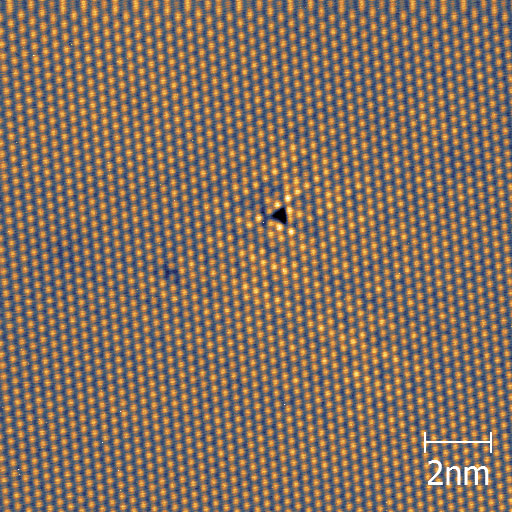

My research at Columbia has consisted of both designing and building, as well as actually using, scanning tunneling microscopes to image various materials. Click the images below for details on some of these materials.

NbSe2 (Niobium Diselenide) is a transition metal dichalcogenide that has a charge density wave (CDW) phase below TCDW~33 Kelvin (K) and superconducts below 7 K. Although these properties of NbSe2 have been studied for ~40 years, the CDW phase is still poorly understood. More recently, other modern materials like the cuprates, pnictides, and manganites have been found to exhibit density wave phases, as well. These materials often have competing phases and heavy disorder, so NbSe2 serves as a clean test-bed to use modern, spectroscopic imaging techniques to better understand the CDW transition.
We found that, contrary to the conventional understanding of the second order CDW transition, intrinsic disorder in NbSe2 pins static CDW order at temperatures well above TCDW. These nanoscale CDW "patches," which are nucleated by defects, grow in size with decreasing temperature until global order is established below TCDW. We were additionally able to infer a large CDW energy gap well below the Fermi energy. All of these findings point to electron-lattice interactions driving the CDW instability.
For more information, see Phys. Rev. B 89, 235115 (2014)
NbSe2-xSx (Sulfer-doped Niobium Diselenide) is a variant of NbSe2 where some of the Selenium atoms have been replaced by Sulfur atoms. Sulfur sits right above Selenium on the periodic table, so Sulfur doping does not add or remove electrons. However, the Sulfur dopants do act as efficient scatterers of electrons in the crystal. By the introduction of these scatterers, we were able to visualize quasiparticle interference in NbSe2 for the first time.
Imaging the interference patterns of electrons scattering off of Sulfur atoms reveals information about the electronic structure of NbSe2. We found out that the electrons did not scatter in the directions that would be expected from "non-interacting" calculations. Instead, it seems that the electrons interact with phonons (lattice vibrations) in the crystal which modifies their scattering behavior.
For more information, see arxiv.org/abs/1408.4432
NaFeAs (Sodium Iron Arsenide) is part of the class of recently discovered iron-based superconductors. Few iron-based superconductors exhibit bulk superconductivity in their undoped, parent state. Rather, many of these parent compounds undergo a tetragonal to orthorhombic sturcutral transition and a paramagnetic to collinear antiferromagnetic or spin density wave (SDW) transition at low temperatures. Upon doping the material, the orthorhombic and SDW phases are suppresed, and superconductivity appears. Thus, understanding the parent state from which superconductivity emerges may shed light on the nature of the unconventional superconductivity in the iron-based superconductors.
Although our STM is not sensitive to the spin of the electrons, the effects of the SDW can be seen with the STM through the anisotropic scattering of electrons off defects in the crystal. This shown in the image to the right as the bright yellow features which rotate in orientation at magnetic domain boundaries. High temperature (T>60K) STS measurements of NaFeAs reveal that some effects of the SDW are still seen even above the bulk ordering temperature (40K). This points to the important role of spin fluctuations in forming the SDW state from which superconductivity appears.
For more information, see the article Nature Physics 10, 225-232 (2014)
{kind=link}
{kind=link}
{kind=link}
{kind=link}
{kind=link}
{kind=link}
{kind=link}